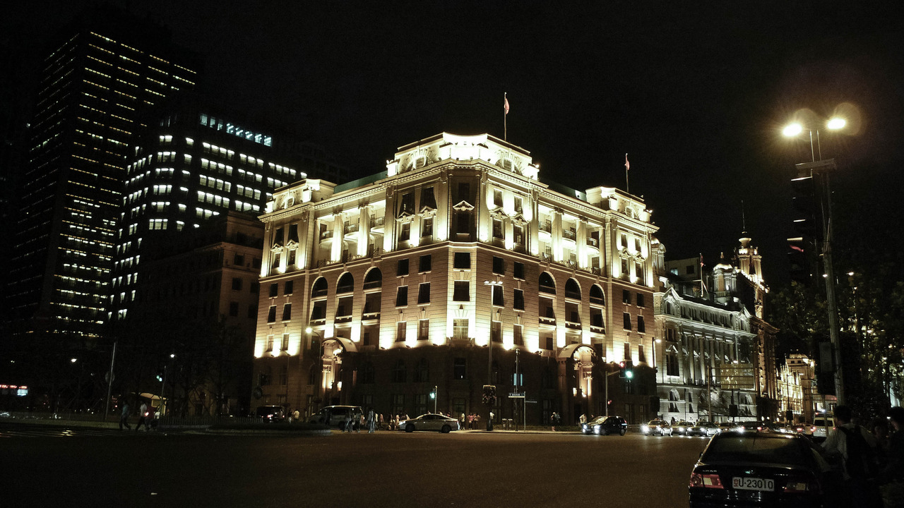
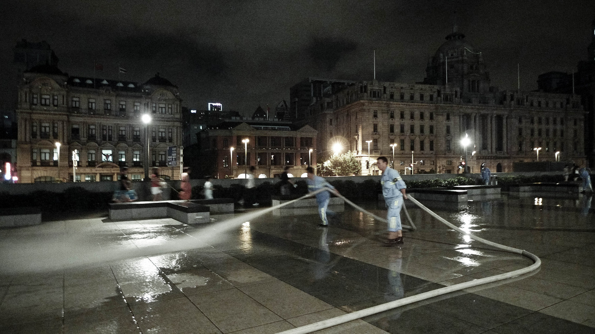
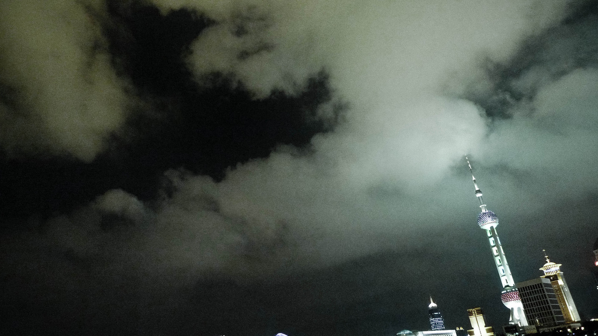
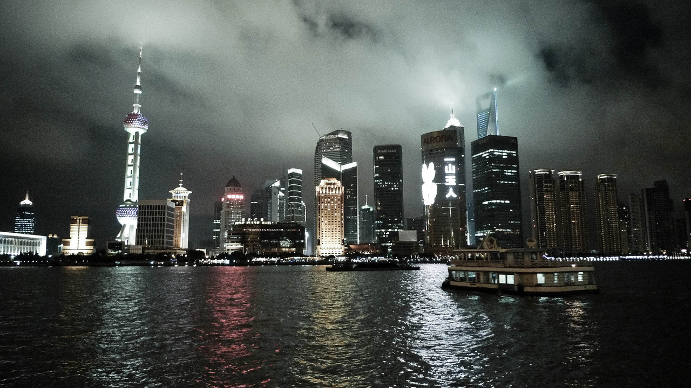

Sun, 29 Aug 2010 13:57:00 · shanghai · cloudy · china · theBund
random pix of shanghai cloudy night on the bund




Random Pix of Shanghai ~ Cloudy Night on The Bund
These pix were taken on a night stroll by the river on the Bund, Shanghai, overlooking Pudong Lujiazui district.